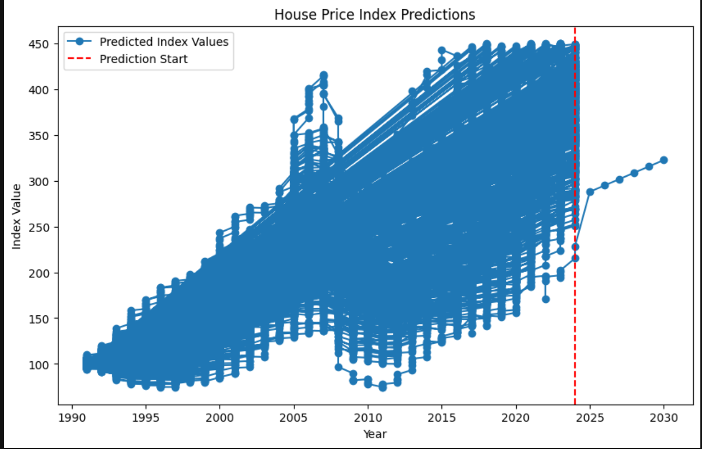

Justin To
Menu
Menu
Home
Projects
Close
AutoTab
AI-powered guitar tab extractor from video
Key Features
Uploads and processes guitar tab videos
Users select frame intervals or specific timestamps
Interactive crop tool to isolate tablature
Automatically detects and extracts tab lines from video frames
Clean and readable output display
Technologies Used
React (TypeScript) + MUI
Flask (Python)
YOLO / Torch
OpenCV
Docker (multi-stage builds)
Development Highlights
Trained a computer vision model with 1400+ labeled images (1000+ synthetic)
Engineered a video processing pipeline to extract frames and infer tab data
Reduced Docker image size from 9GB to 6GB with multi-stage builds
Screenshots

Links
View on GitHub